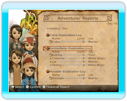

12
|
La tua giornata da re |
 |
L'obiettivo di questo gioco consiste nel costruire edifici e realizzare i desideri del popolo in modo tale da riportare il tuo regno al suo antico splendore.
Sta a te decidere cosa fare di giorno in giorno!
Proprio come nel mondo reale, al giorno segue la notte: tieni d'occhio l'orologio che si trova in alto a sinistra dello schermo. Quando il sole tramonta, la giornata ha fine e Chime appare per ricordare al re che è ora di andare a letto.  ● Mattina Ogni mattina Chime ti informerà di tutto ciò che è avvenuto il giorno precedente. Accertati di controllare con attenzione tutte le informazioni: contengono suggerimenti su ciò di cui il regno ha bisogno e ti serviranno a pianificare la tua giornata. Potrai anche preparare gli ordini da affiggere sulla bacheca, come missioni o cambi di classe per i tuoi avventurieri. |
 ● Giorno
● GiornoCi sono molte cose che potrai fare nella tuà città: scegliere gli avventurieri da inviare in missione, costruire edifici e discutere con gli abitanti. Queste chiacchierate potrebbero contenere suggerimenti su cose importanti da fare, quindi presta attenzione ai tuoi sudditi! Sappi che è divertente osservare i cittadini che si muovono nel loro tran tran quotidiano: il loro agire riflette i bisogni e i desideri del momento. |
 ● Tramonto
● TramontoQuando inizia a farsi buio, Chime ti raggiungerà per ricordarti che è l'ora di andare a letto, dichiarando così la fine della giornata. Ricorda che puoi decidere di andare a dormire anche prima dell'arrivo della tua amica. Quando il regno inizierà a prosperare, e la felicità dei tuoi cittadini aumenterà, potrai rimanere all'aperto per più tempo. |
 |
 |
 |